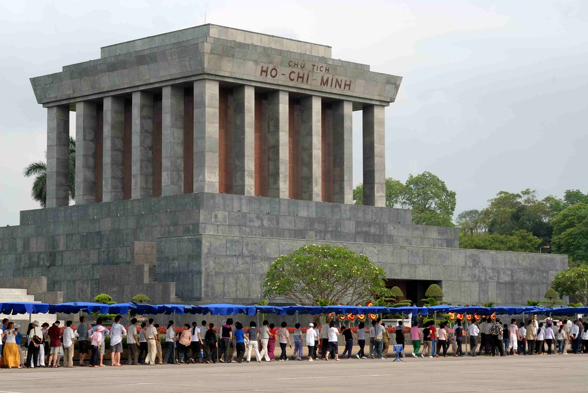
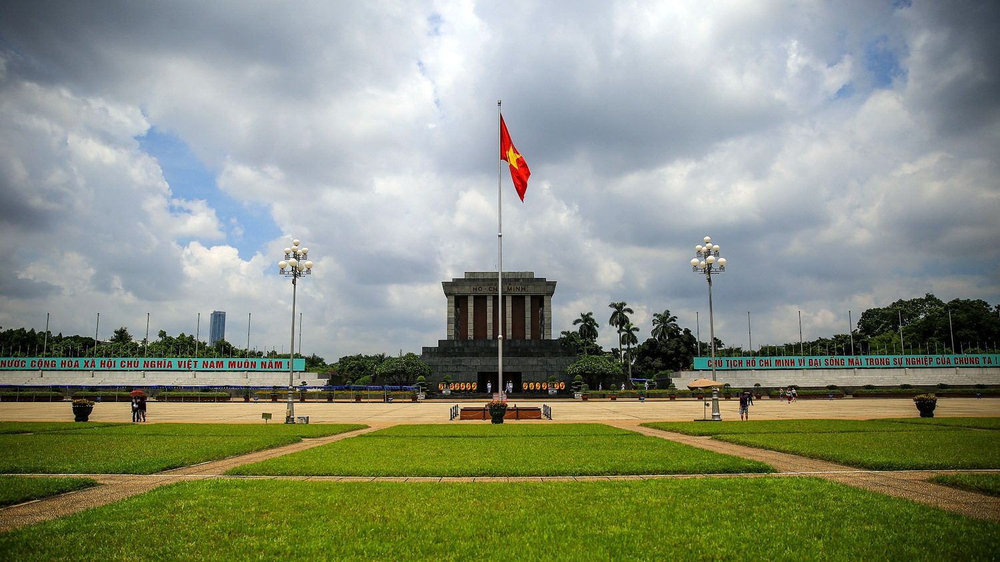

Lăng Bác (hay còn có tên gọi khác là Lăng Chủ tịch Hồ Chí Minh) – là nơi đặt thi hài của Bác Hồ.
Lăng được khởi công xây dựng chính thức vào ngày 2/9/1973 tại lễ đài cũ giữa Quảng trường Ba Đình
lịch sử hào hùng. Công trình Lăng Bác được hoàn thành vào năm 1975 và khánh thành vào ngày 29/8/1975.

Đoàn người xếp hàng vào lăng Bác.
Lăng Bác được xây dựng lên theo bốn phương châm: Dân tộc – hiện đại – trang nghiêm – giản dị. Vật
liệu xây dựng Lăng cũng được mang đến từ nhiều địa phương trên khắp cả nước, đều được đảm bảo về độ
an toàn và chất lượng. Lăng gồm có ba tầng:
Tầng 1 là một dãy khán đài xây theo hình bậc thang để tiện tổ chức các buổi lễ quan trọng tại
Quảng Trường Ba Đình.
Tầng 2 là phần Trung Tâm của lăng gồm phòng thi hài, các hành lang và cầu thang lên xuống. Di
hài của Chủ tịch Hồ Chí Minh được đặt trong lồng kính cùng với nhiệt độ phòng ở mức quy định.
Tầng trên là mái lăng được thiết kế thành hình tam cấp. Trên mặt chính của Lăng có khắc dòng
chữ “Chủ Tịch Hồ Chí Minh” bằng đá hồng ngọc màu mận chín.
Hình ảnh Lăng Bác đã gắn bó sâu sắc trong tâm thức của biết bao người. Mỗi khi tới thăm lăng ai cũng
có cảm giác như được ở gần hơn với Chủ tịch Hồ Chí Minh, tấm lòng kính trọng, biết ơn gửi tới Người
Luôn được đề cao. Chắc hẳn ai tới đây cũng không thể tránh khỏi những giây phút bồi hồi, xúc động
khi được thăm nơi an nghỉ của Người cha già vĩ đại và cùng lắng nghe lại những câu chuyện, những
phóng sự đời thực về Bác Hồ kính yêu.

Quảng trường Ba Đình lịch sử phía trước lăng Bác.
Một số lưu ý khi đến Lăng Bác
Du khách trong nước và quốc tế cần theo dõi lịch mở cửa Lăng Bác để sắp xếp lộ trình di chuyển hợp
lý. Bên cạnh tìm hiểu về thời gian hoạt động bạn cần chú ý đến vấn đề trang phục, thái độ, các vật
dụng được phép sử dụng khi vào lăng viếng Bác.
Giá vé vào Lăng Bác được áp dụng linh hoạt như sau:
Miễn phí hoàn toàn giá vé đối với toàn bộ người Việt Nam khi đến thăm.
Thu 25.000đ đối với những người ngoại quốc khi đến thăm lăng.
Những quy định cần biết khi vào Lăng Bác:
Về phần trang phục: Theo quy định của ban quản lý lăng, du khách tới viếng thăm lăng phải ăn
mặc gọn gàng, lịch sự, không được ăn mặc hở hang, gây phản cảm. Vì vậy bạn cần tránh các loại
váy áo ngắn, áo cổ khoét sâu, áo sát nách khi viếng thăm lăng.
Về thái độ: Du khách tới thăm lăng cần phải đi đứng nhẹ nhàng, nói nhỏ vừa đủ nghe, không được
cười đùa to tiếng, gây ồn ào, mất trật tự ở khu vực xung quanh lăng. Từ cửa chính Quảng trường
Ba Đình cho tới lăng, du khách cần tuân thủ đứng xếp hàng ngay ngắn và tuân theo sự chỉ dẫn của
người hướng dẫn viên, không chen lấn, xô đẩy nhau. Khi vào khu vực trung tâm của lăng, du khách
phải bỏ mũ ra, hai tay buông thẳng, không được cho tay vào túi quần, không cười nói to, chỉ trỏ
xung quanh.
Về các vật dụng được mang vào lăng: Du khách có thể mang theo điện thoại, máy quay, máy ảnh vào
trong lăng tuy nhiên không được phép tùy ý sử dụng các loại phương tiện này tại một số khu vực
đã được ban quản lý quy định.
Về đối tượng thăm lăng: Lăng Bác nhận đón tiếp du khách từ 3 tuổi trở lên, còn trẻ em dưới 3 tuổi
không được vào thăm lăng.